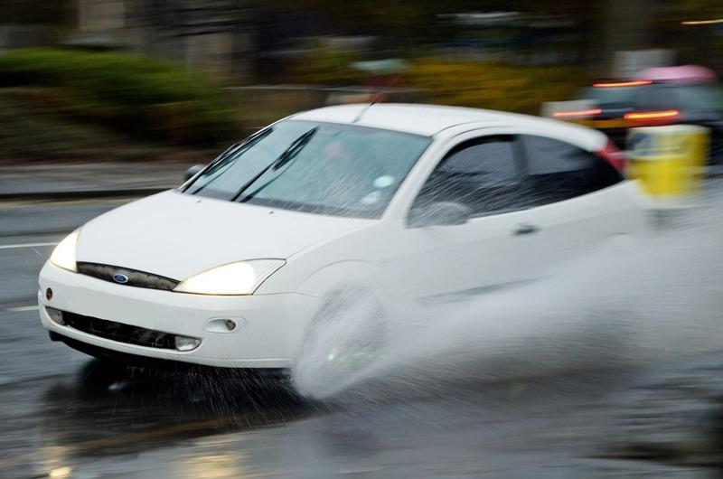

雨天开车，驾驶人最害怕的就是车子打滑，轮胎无法附着地面，失去了转向、煞车与加速的动力。加州AllGood驾驶学校创办人、有27年开车经验的托马斯（Mike Thomas）表示，这简直像开着一艘船，轮胎完全没有与路面接触，当它们再次着地时，车子身在何处只能听天由命，「这十分吓人」。
最大错误：猛踩煞车
网络媒体哈芬登邮报（Huffpost）报导，如果碰上一个轮胎或所有轮胎都打滑，有件事绝对不能做，以免变得更糟。托马斯指出，当车辆打滑不受控制时，害怕是正常的，但要记住保持冷静，紧握方向盘、慢慢松开油门、不踩刹车，直到轮胎恢复附着力。他说，最大的错误就是猛打方向盘或猛踩煞车。
(function (src, width) { if (window.screen.width > width) { const tag = document.createElement(‘script’) tag.onload = function () { this.setAttribute(‘loaded’, ”) } tag.async = true tag.src = src const s = document.getElementsByTagName(‘script’)[0] s.parentNode.insertBefore(tag, s) } })(“https://player.gliacloud.com/player/adgeek_worldjournal_desktop”, 600)
(function (src, width) { if (window.screen.width <= width) { const tag = document.createElement('script') tag.onload = function () { this.setAttribute('loaded', '') } tag.async = true tag.src = src const s = document.getElementsByTagName('script')[0] s.parentNode.insertBefore(tag, s) } })("https://player.gliacloud.com/player/adgeek_worldjournal_mobile", 600)
「消费者报导」负责评鉴轮胎的皮兹佐科斯基（Ryan Pszczolkowski）解释为什么不要突然急转弯，他说，当回到干燥的路面时，若车轮已经转向，突然间有了抓地力，车就会向某一边暴冲。
在轮胎恢复附着力前，双手不能离开方向盘，并保持警觉。佛罗里达州Pinellas驾驶学校负责人佛兰克（Steve Frank）说，如果一个后轮开始打滑让车子向右滑动，就顺着打滑的方向右转，并尝试恢复附着力。他说，基本上是要阻止汽车旋转。
发生打滑时，急煞车不仅无济于事，还可能导致煞车锁死。托马斯说，如果煞车被锁死，车身会侧倾，可能造成翻车。
如何避免发生打滑
检测胎压：适当充气且胎纹较深的轮胎是避免打滑的最佳方法。佛兰克表示，充气不足、胎纹磨损的轮胎很难让水通过；因此不要忽视胎压监测系统发出的警告。
刚下雨时要格外小心：开始下雨的前几分钟比雨势最猛时更容易发生打滑，尤其是在一段时间未下雨的情况下。佛兰克指出，这是因为车辆留在路面上的油都会浮在水面，使马路变得更滑。
暴雨中不要急速行驶：在暴雨时慢速行驶可以让驾驶人有更多的时间不必通过紧急煞车或急转弯来应变。如果可能的话，避免在积水或水坑上行驶，因为小水坑下面可能是个「巨大的坑洞」。
淹水时不要开车：暴风雨来临时最好不要开车，被水淹没的道路尤其危险。美国国家公路交通安全管理局（NHTSA）网站说明，驾驶人往往低估大水的威力，只需12英吋的急流就能冲走大部分车辆，而两英尺的汹涌水流就可冲走大部分卡车和SUV。